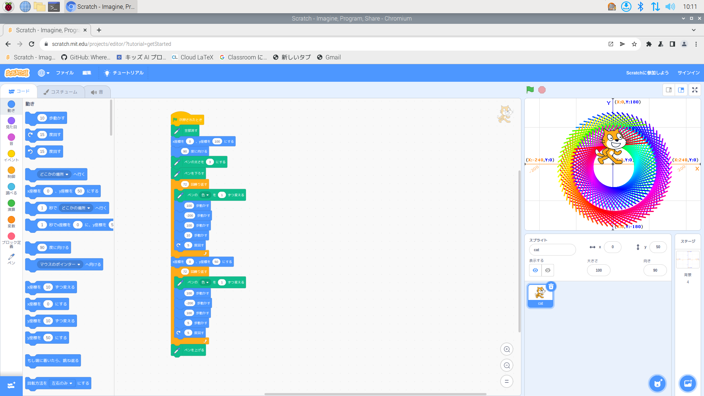
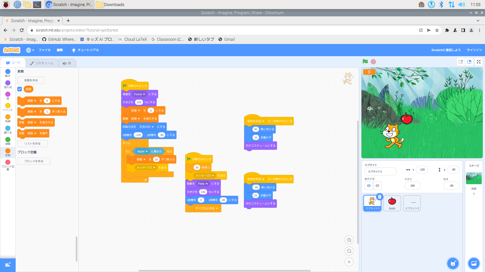

公大高専１年実習I-1レポート
3組16番 さだ
第1週目
1-1 サイエンスアート

1.内容
猫の動きに合わせて線を引くことで絵を描く.猫の動きをプログラムし,様々な絵を書くことができる.
2.感想
描くたびに色が変わるのが,とてもきれいでたのしかった.
1-2 ゲーム

1.内容
落ちてくるりんごを拾って得点を稼ぐゲームを作った.制限時間をつけて時間が終わると背景が変わり,最終の得点が表示されるようにした.
2.感想
音がうるさいので無くしたが,いいものができたと思う.初動の加速が少し遅いのが少し心残りがある.
1-3 ホームページ作成
私のホームページ
1.内容
GitHubを使用し,ホームページを作成した.
2.感想
わからないことだらけでとても難しかったけど,成長できたと思う.